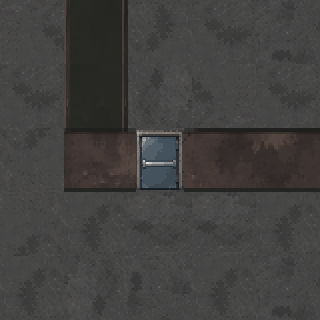
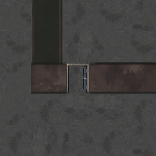
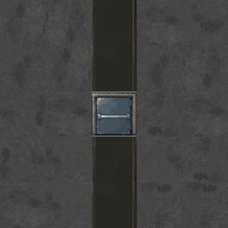
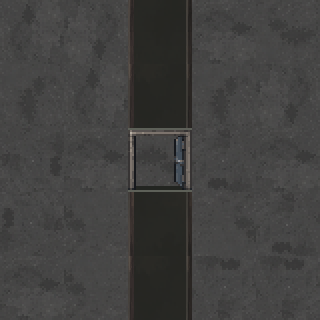

가로문·세로문, 열렸을 때
C 설정 · 가로 폭24 / 세로 폭32 · 같은 문 위치에서 닫힘과 열림 비교
가로 벽의 문 · 위아래로 통과


세로 벽의 문 · 좌우로 통과


32픽셀 타일을 2배 확대한 모습입니다. 열린 문짝은 오른쪽에 접혀 있고, 가운데로 바닥이 보입니다.
C 설정 · 가로 폭24 / 세로 폭32 · 같은 문 위치에서 닫힘과 열림 비교




32픽셀 타일을 2배 확대한 모습입니다. 열린 문짝은 오른쪽에 접혀 있고, 가운데로 바닥이 보입니다.